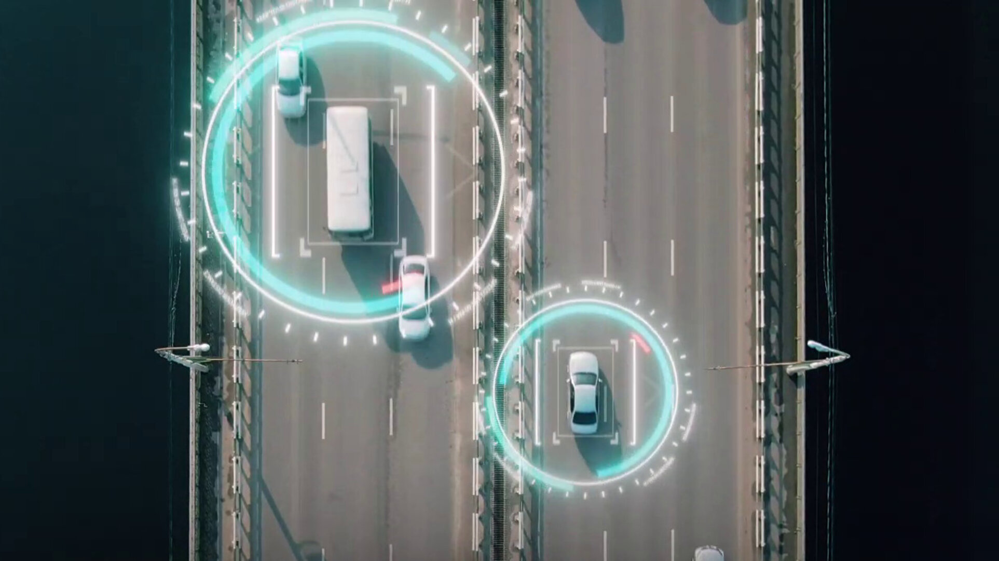
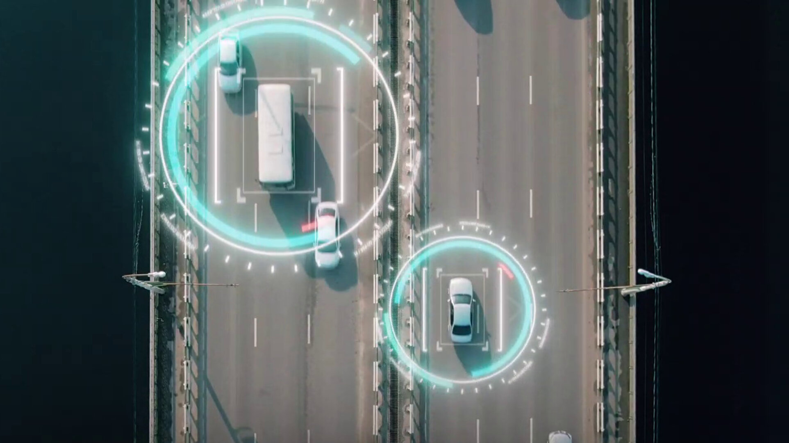

Invent tomorrow’s driving with NAVISP
The way we drive is evolving rapidly, trending towards progressively more automated vehicles and smarter road infrastructure. ESA’s NAVISP programme, in cooperation with new partner ERTICO-ITS, the organisation for intelligent transport systems in Europe, invites ideas from European industry, institutions and research institutes to support this trend through the provision of ‘positioning, navigation and timing’ (PNT) information to let vehicles know exactly where and when they are as they drive.
Vehicle automation can reduce the burden of human drivers while more efficiently managing traffic flow, reducing congestion and improving fuel economy and overall transport sustainability. To make this possible, vehicles of all kinds will need to communicate continuously with each other as well as their surrounding infrastructure for example to verify their position and that of other road users and thus to enable data-based decision making, a concept referred to as cooperative, collaborative and connected mobility, CCAM.
Of the more than 40 000 deaths per year on European roads, more than 90% are due to human error. Meanwhile the transport and mobility sector is responsible for 23% of global CO2 emissions, the majority from passenger cars and trucks. Accordingly the adoption of CCAM technologies, complementing new transport models such as electric vehicles, promise to make driving safer and more sustainable – fitting with ESA’s Space for a Green Future goal to accelerate the use of space to mitigate climate change and enhance quality of life.
To support and accelerate this transition to a more connected, collaborative, and automated society, ESA’s Navigation Innovation and Support Programme (NAVISP), in cooperation with ERTICO-ITS, is opening a call for ideas to solicit research proposals aimed at advancing the use of PNT in the CCAM domain.
The future of driving – five steps along the way
The call for proposals is organised around five themes:
Ubiquitous and high-performance PNT for CCAM – For the highest level automated driving functions, PNT will need to be available on a ubiquitous basis to a precision of less than 10 cm. Today’s satnav is not able to meet such stringent requirements but will need to be combined with many other solutions, such as 5G-based technology, onboard sensors and smart roads, with vehicles continuously exchanging positioning data with each other and their surrounding infrastructure.
Perception 360 for CCAM – For full situational awareness of their surroundings, connected, cooperative and automated vehicles must acquire and merge data from a wide variety of sources, such as cameras, lidar, radar and speed detection systems. An important task is the detection of moving objects, for instance to differentiate a parked motorcycle from a moving bicycle, made more difficult by the fact the host vehicle is itself in motion. Artificial intelligence and machine learning will play an important role in such real-time tasks, including achieving a 360 degree bird’s eye view of the vehicle and its surroundings.
PNT monitoring and over-the-air updates for CCAM – Today’s drivers are familiar with the way that their vehicles’ satellite navigation maps are updated quietly via cellular networks, wi-fi or Bluetooth. The reach of such over-the-air software and firmware updates is progressively extending, and in future ‘highly automated driving functions’ will be updated in this way. This in turn demands a highly secure information management system, incorporating the transmission of diagnostic and position data between the vehicle and manufacturer to analyse and evaluate the vehicle's behaviour and the traffic situation. Achieving this involves stringent cybersecurity requirements, and the investigation of novel technical avenues such as blockchain.
PNT for Clean Mobility – The Paris Agreement’s goal of Net Zero by 2050 dictates that sooner or later petrol vehicles will be replaced by electric vehicles, slashing pollution and greenhouse gas emissions. But such a shift will require a whole new charging infrastructure. And in addition to the provision of charging stations, drivers will require information on accessing them optimally (while extending battery life) and the currently quoted electricity price, which may vary based on source and timing. A second use case revolves around the integration of electric vehicles into smart grids, including supplying energy back into the grid – known as ‘vehicle to grid’ V2G – which will require careful management and demand the kind of precise time stamps provided by PNT.
Testing for CCAM-related PNT technologies – All these new technological opportunities open up new ways to improve road safety, develop sustainable infrastructure and increase mobility. But to fully exploit their potential they need to be properly tested and, if necessary, improved and further developed. For the most part that testing cannot be done on public roads but instead requires dedicated testbeds – incorporating full data capture to test the real effectiveness of vehicle-to-vehicle and vehicle-to-infrastructure communications for autonomous driving – with a particular focus on national and cross-border testbeds.
This Thematic Window is open until 28 February 2023, with an initial information webinar scheduled for 18 October. For more details of this and how to register, visit the the event page on the NAVISP website.
About NAVISP
Many of the experts that designed and oversaw the Galileo satnav system are now supporting cutting-edge European companies in the development of new navigation technologies and services – in support of Europe's industrial competitiveness, autonomy and leadership. The result is ESA’s Navigation Innovation and Support Programme, NAVISP.
NAVISP is looking into all kinds of clever ideas about the future of navigation: ways to improve satellite navigation, alternative positioning systems and, new navigation services and applications.
Working in partnership with European industry and researchers, more than 200 NAVISP projects have been initiated so far.
 

Access the video